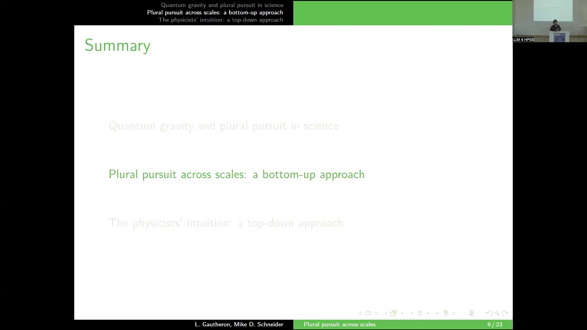
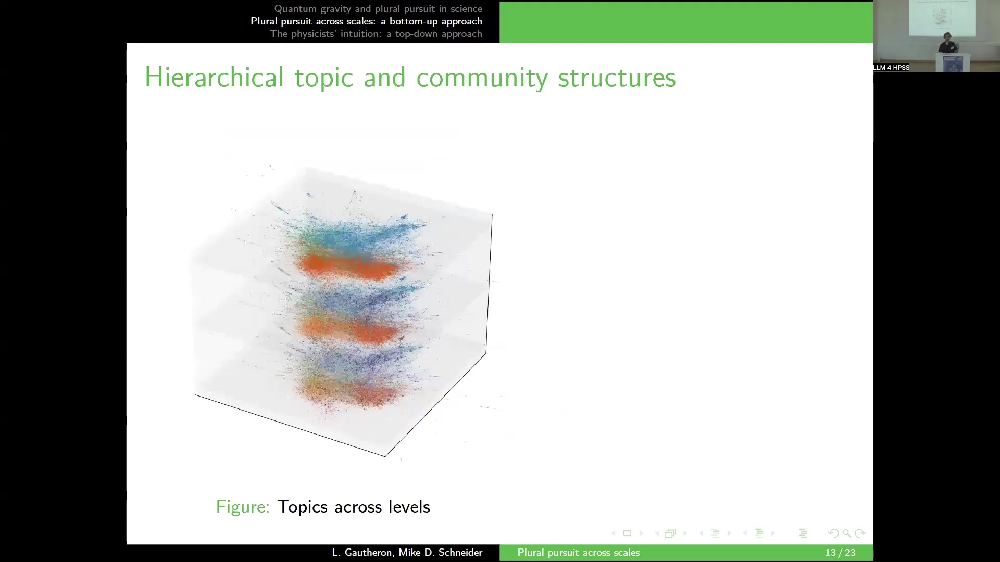

13 Plural pursuit across scales
The presentation investigates the structure of quantum gravity research using computational methods to address questions in the philosophy of science, specifically the concept of “plural pursuit”. The core problem is formulating a quantum theory of gravity, which has led to multiple attempted solutions and a situation characterized as plural pursuit. Plural pursuit is defined as distinct yet concurrent instances of normal science dedicated to a common problem-solving goal, where each inst…
14 Plural pursuit across scales
14.1 Overview
The presentation investigates the structure of quantum gravity research using computational methods to address questions in the philosophy of science, specifically the concept of “plural pursuit”. The core problem is formulating a quantum theory of gravity, which has led to multiple attempted solutions and a situation characterized as plural pursuit. Plural pursuit is defined as distinct yet concurrent instances of normal science dedicated to a common problem-solving goal, where each instance is articulated by a community tied to an intellectual disciplinary matrix. The research empirically tests whether quantum gravity research is an instance of plural pursuit, meaning independent communities pursuing different paradigms in parallel.
The methodology involves a bottom-up reconstruction of the research landscape and a top-down comparison with physicists’ intuitions. The bottom-up approach utilizes a dataset of 228,748 abstracts and titles from theoretical physics literature listed on Inspire HEP.
This involves a two-step clustering pipeline: linguistic analysis and social network analysis. Linguistic analysis spatializes documents into an embedding space, performs unsupervised clustering to identify 611 fine-grained topics, and assigns specialties to authors based on their most common topic. Social network analysis constructs a co-authorship graph of approximately 30,000 physicists and applies community detection to recover 819 communities.
A key challenge is that computational notions of topics and communities are scale-dependent. To address this, hierarchical clustering is applied: Ward agglomerative clustering for topics and hierarchical stochastic block modelling for communities, yielding multi-level partitions. An adaptive topic coarse-graining strategy is introduced, based on the Minimum Description Length (MDL) criterion, to select an appropriate scale by merging topics as long as it retains useful information for understanding the social structure. This process reduces the initial 611 topics to 50 coarse-grained topics.
The bottom-up results show that the relationship between communities and topics is complex, exhibiting nested structures and lacking a clear one-to-one mapping at fine scales. The coarse-grained topics, derived using the MDL criterion, reveal that some small-scale linguistic topics are preserved due to their relevance to social structure, while others are merged. The analysis of the correlation matrix between these 50 topics and communities across different hierarchical levels indicates that some topics (e.g., string theory) correspond to communities at higher hierarchical levels, while others (e.g., loop quantum gravity) correspond to communities at lower, more fine-grained levels. Observations suggest instances where communities are tied to multiple topics or nested within larger structures, indicating a departure from a simple plural pursuit configuration.
The top-down approach surveys founding members of the International Society for Quantum Gravity to elicit their intuitive list of structuring approaches (e.g., string theory, supergravity, causal sets, loop quantum gravity, holography). An SVM classifier is trained on text embeddings (all-MiniLM-L6-v2) using hand-coded labels based on this list to predict which papers belong to which approach.
Comparing the top-down (supervised) approaches to the bottom-up (coarse-grained) topics shows agreement for approaches considered well-defined and conceptually autonomous. However, disagreement exists for phenomenological or less conceptually integrated frameworks. A notable finding is the convergence of the bottom-up analysis regarding string theory, supergravity, and holography. While historically and conceptually distinct, the bottom-up analysis lumps them together in the coarse-grained topic structure, aligning with the intuition of some physicists that the communities working on these areas have significant overlap and are not meaningfully separable at a certain scale.
The conclusions state that socio-epistemic systems operate at multiple scales, and notions of communities and disciplinary matrices are scale-dependent. Identifying plural pursuit configurations requires matching these structures across scales. The bottom-up reconstruction in quantum gravity research can confirm or re-assess physicists’ intuitions. The work demonstrates that computational methods can revisit and challenge philosophical insights, acting as a continuation of philosophy by other means.
14.2 Introduction

The research represents a joint effort with Mike Schneider from the University of Missouri. The primary objective is to address general questions within the philosophy of science by employing a combination of computational methods and social network analysis techniques. The specific case study chosen for this investigation is quantum gravity.
A long-standing and significant problem in fundamental physics is the formulation of a quantum theory of gravity. This problem involves reconciling the established knowledge of physical phenomena at small scales, described by quantum mechanics, with the understanding of phenomena at very large scales, described by general relativity.
Numerous attempted solutions exist to address this challenge. These attempted solutions include prominent approaches such as String theory, Supergravity, Loop quantum gravity, spin foams, Causal set theory, and Asymptotic safety, among others. The existence of multiple concurrent approaches attempting to solve the same fundamental problem leads to the introduction of a conceptual framework termed “plural pursuit”.
14.3 Plural Pursuit: Definition and Empirical Question
Plural pursuit is defined as a situation characterized by distinct yet concurrent instances of normal science. These instances are dedicated to achieving a common problem-solving goal. In the context of the quantum gravity case study, this common goal is the reconciliation of quantum mechanics and gravitation.
Each instance of normal science within this framework is articulated by a specific community that is tied to an intellectual disciplinary matrix. This concept aligns with established ideas in the philosophy of science, such as Kuhn’s paradigms, Laudan’s research traditions, and Lakatos’ research programmes, which describe the structured intellectual and social frameworks guiding scientific research.
Based on this definition, the research poses an empirical question: Is quantum gravity research an instance of plural pursuit? This question is interpreted as investigating whether the field is composed of independent communities that are pursuing different paradigms in parallel.
14.4 Bottom-Up Methodology: Data and Pipeline

To address the empirical question, the research proposes performing a bottom-up reconstruction of the research landscape within quantum gravity. This reconstruction aims to capture both the linguistic and intellectual structure of the field, as well as its social structure.
The data source for this reconstruction is the Inspire HEP database, from which a dataset comprising 228,748 abstracts and titles of theoretical physics literature was gathered. The analysis proceeds through a two-step clustering pipeline: Linguistic analysis and Social network analysis.
The Linguistic analysis component (L) involves several steps. Step L.1 spatializes the documents into an embedding space. Step L.2 performs unsupervised clustering on this embedding space, resulting in an initial partition of the literature into K = 611 topics.
This clustering is performed at a very fine-grained level, which is considered necessary to identify niche approaches within quantum gravity that may involve a relatively small number of papers, potentially as few as 100. Step L.3 involves specialty assignment, where each scientist or physicist is assigned a specialty corresponding to the topic that is most common across their publications. This process yields a partition of authors based on the linguistic and intellectual structure derived from the literature.
The Social network analysis component (S) begins with Step S.1, constructing a co-authorship graph. In this graph, nodes represent individual physicists, and edges represent co-authorship relationships between them. The network includes approximately 30,000 physicists.
Step S.2 applies a community detection method to this co-authorship graph, recovering an initial partition of the network into C = 819 communities. This provides a partition of authors that reflects the social structure of the field as captured by collaborative relationships.
14.5 Plural Pursuit: Mapping and Challenges
Within the framework of the computational constructs derived from the bottom-up analysis (communities and topics), plural pursuit is conceptualized as a one-to-one mapping between communities and topics. Ideally, this configuration would be represented by a block-diagonal correlation matrix where communities are listed on one axis and topics on the other. Such a matrix structure would imply that each community is entirely dedicated to a single topic, signifying a clear division of labor within the field.
However, applying this concept directly to the very fine-grained partitions (611 topics, 819 communities) results in a correlation matrix that is complex and difficult to interpret, exhibiting a high degree of structure without clear block-diagonal patterns. This complexity arises from inherent issues with the fine-grained partitions.
The first issue is the arbitrary nature of the level of fine-graining for topics. For example, a broad research program like string theory, which is intuitively understood as a coherent entity, might be fragmented and scattered across numerous fine-grained topics in the initial clustering. The second issue is that large research programs may be pursued by multiple communities in parallel. This occurs because social communities are shaped not only by intellectual similarity but also by various micro-social processes, such as geographical proximity or local collaborations.
These issues fundamentally stem from the fact that the computational notions of both topic and community are scale-dependent. Furthermore, this technical challenge reflects a deeper conceptual problem: research programs themselves are often hierarchically nested. For instance, string theory can be conceptually divided into families and subfamilies like Superstring Theory, which further branches into Type II, Heterotic, Bosonic String Theory, Type I, Type IIA, Type IIB, Heterotic SO(32), and Heterotic E₈ × E₈. Therefore, to accurately identify instances of plural pursuit, it is necessary to address this issue of scale dependence and the inherent ambiguity it introduces.
14.6 Hierarchical Reconstruction

To address the scale dependence inherent in the initial fine-grained partitions, the research proposes building a hierarchical reconstruction of the quantum gravity research landscape. This involves applying hierarchical clustering techniques to both the topic and community structures.
For the topics, a hierarchical clustering approach is used, specifically the Ward agglomerative clustering algorithm. This method starts with the initial 611 fine-grained topics and iteratively merges them one by one based on an objective function. This process builds a dendrogram representing the hierarchical relationships between topics at different levels of granularity.
For the community structure, a hierarchical clustering is also constructed. This is achieved using a hierarchical stochastic block model, which is capable of learning a multi-level partition of the network directly. This model identifies coarser and coarser communities at increasing levels of the hierarchy. The model used is referenced as Peixoto 2014.
The application of these hierarchical methods results in hierarchical structures for both topics and communities. These structures induce a notion of scale, which allows researchers to observe and analyze the socio-epistemic system of quantum gravity research at various levels of coarse-graining, moving from very fine distinctions to broader groupings.
14.7 Adaptive Topic Coarse-Graining: MDL Criterion

A challenge arises because the selection of a specific scale at which to observe the community and topic structures remains arbitrary at this stage. The choice of scale significantly impacts the resulting correlation matrix between communities and topics, leading to potentially different interpretations of the research landscape.
To address this, the research proposes an adaptive topic coarse-graining strategy. The core idea is to merge the initial K=611 fine-grained topics. This merging process continues only as long as it does not remove information deemed useful for understanding the social structure of the field.
This strategy is based on an information theoretic criterion: the Minimum Description Length (MDL) criterion. The MDL criterion seeks to find the partition σ that minimizes the quantity given by the formula arg min_σ [-log P(G|σ) - log P(σ)]. This formula balances two factors: the first term, -log P(G|σ), represents how well the linguistic partition σ explains the social structure, as captured by the graph G; the second term, -log P(σ), represents the complexity of the partition σ itself. The objective is to find a partition that is complex enough to explain the social structure effectively but not overly complex or fine-grained.
In practice, this involves navigating the hierarchical topic dendrogram. The process “zooms in” or maintains finer distinctions as long as doing so improves the MDL criterion. It stops coarse-graining when further complexity (finer partitions) no longer yields sufficient information gain about the social structure. Applying this strategy reduces the initial 611 topics to a set of 50 coarse-grained topics.
An observation regarding these resulting topics is that certain small-scale linguistic topics from the initial fine-grained partition are preserved. This indicates that these specific nuances, captured at a fine level, are important for understanding the social structure. Conversely, many other topics are lumped together into much larger groupings. This outcome justifies the initial step of starting with a very fine-grained classification, as some of these small topics are indeed relevant for explaining the social structure.
14.8 Bottom-Up Results: Topics and Communities

The adaptive coarse-graining strategy results in a set of 50 topics. These topics are assigned labels by retrieving representative engrams, providing some interpretability. The subsequent analysis focuses specifically on those topics identified as relevant to quantum gravity.
The core analysis involves confronting these 50 coarse-grained topics with the community structures derived from the hierarchical stochastic block model. This is visualized and analyzed using a correlation matrix, where the columns represent the 50 resulting topics and the rows represent communities identified at different levels of the community hierarchy. For each topic, the analysis attempts to identify the community that best corresponds to or explains that topic across the various hierarchical levels of the community structure.
Observations from this analysis reveal several patterns. Some topics, such as a large topic identified in purple, do not appear to be tied to a specific community, suggesting they represent concepts or areas broadly relevant across the entire field rather than being the exclusive domain of a particular group. However, other topics show a strong correspondence with specific community structures at certain hierarchical levels.
For instance, the topic identified as string theory corresponds well to a community structure found at the third level of the community hierarchy. In contrast, other research programs in quantum gravity, such as loop quantum gravity, appear to correspond to communities found at much lower, more fine-grained levels of the hierarchy.
Furthermore, the analysis provides evidence that challenges a simple model of plural pursuit characterized by a clear one-to-one mapping and division of labor. Nested structures are observed, such as a smaller community tied to the topic of holography that is itself part of a larger community associated with string theory. This indicates that different scales are entangled and that a clear separation of communities pursuing distinct intellectual domains is not consistently present across the landscape.
14.9 Top-Down Approach: Survey and Classification

The second part of the research involves confronting the bottom-up reconstruction of the quantum gravity research landscape with the intuitions held by physicists themselves regarding how their field is structured.
This top-down perspective was gathered through a survey administered to the founding members of the International Society for Quantum Gravity. Participants were asked to provide a list of approaches to quantum gravity that they perceived as structuring the overall research landscape. The feedback from the survey, while not entirely unanimous, resulted in a comprehensive list of intuitive approaches, including asymptotic safety, causal sets, dynamical triangulations, group field theory, lqg (loop quantum gravity), spin foams, noncommutative geometry, swampland, modified dispersion relation, dsr, quantum modified bh, shape dynamics, tensor models, string theory, supergravity, and holography.
For a more detailed comparison, the research specifically focused on the last three approaches: string theory, supergravity, and holography. This particular focus was motivated by the observation that some physicists surveyed expressed disagreement about whether these should be considered separate approaches, despite their distinct historical origins and conceptual differences.
To facilitate the comparison between this intuitive, top-down view and the bottom-up analysis, a classifier was trained to predict which papers belong to which of these intuitive approaches. The classifier used was a Support Vector Machine (SVM). It was trained using text embeddings derived from the titles and abstracts of papers, specifically utilizing the all-MiniLM-L6-v2 model for generating these embeddings. The training data consisted of a set of papers with hand-coded labels indicating their corresponding intuitive approach.
14.10 Top-Down vs. Bottom-Up Comparison

The research proceeds to compare the top-down perspective, represented by the supervised classification into intuitive approaches, with the bottom-up reconstruction, specifically the 50 coarse-grained topics. This comparison is visualized using a heatmap where rows represent the top-down (supervised) approaches and columns represent the coarse-grained bottom-up topics.
The findings from this comparison reveal varying degrees of agreement. For certain top-down approaches, there is a strong correspondence with specific topics that emerged from the bottom-up analysis. However, for other approaches, the correspondence is weak or non-existent. An explanation for this disagreement is that the bottom-up analysis tends to align well with approaches that are considered well-defined and conceptually autonomous, while it shows less correspondence with approaches that are primarily phenomenological or not yet developed into full-fledged conceptual frameworks.
A particularly notable finding concerns the relationship between string theory, supergravity, and holography. The bottom-up analysis reveals a large cluster identified as string theory that appears to encompass both supergravity and string theory. This observation converges with the intuition expressed by some physicists in the survey, who struggled with whether supergravity and string theory should be considered separate entities, noting the significant overlap between the communities working on them and questioning whether they could be meaningfully separated. The interpretation is that the coarse-graining process, by stripping away linguistic nuances that do not have consequences for the social structure, groups together areas like supergravity and string theory, even though they are conceptually distinct, thereby reflecting the social reality of highly overlapping communities.
14.11 Conclusions

The research draws several conclusions regarding the structure of scientific fields and the application of computational methods in the philosophy of science.
Firstly, it concludes that socio-epistemic systems, which encompass both the social and intellectual aspects of scientific research, can be observed and analyzed at multiple scales. This implies that the fundamental notions of communities and disciplinary matrices, central to understanding the structure of science, are inherently scale-dependent.
Secondly, identifying configurations of plural pursuit, which ideally involve a one-to-one mapping between communities and their intellectual substrate, necessitates matching these structures across different scales. A simple analysis at a single, arbitrary scale is insufficient to capture the complex relationships present.
Thirdly, specifically in the case of quantum gravity, the bottom-up reconstruction of the research landscape, utilizing data-driven methods, can serve to either confirm or re-assess certain intuitions held by physicists about how their field is structured. The analysis provides empirical evidence that can validate or challenge subjective perceptions.
More broadly, the research highlights the increasing power of computational methods as tools that can help revisit or challenge long-standing philosophical insights that were previously based primarily on intuition. This includes intuitions about concepts such as what constitutes a paradigm or a community in a given scientific context. Drawing an analogy, the research suggests that computation can be seen as the continuation of philosophy by other means, paraphrasing Clausewitz.